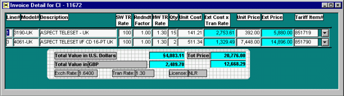
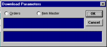
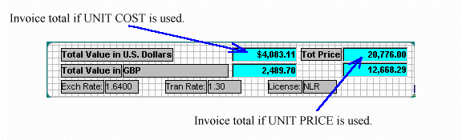

The Detail screen contains the data for the main body of the invoice.
Completing the Detail screen.
(A Header must be created before starting the Details screen. Please
be sure to review HEADER before continuing with this page.)
The example we are working with is an invoice for a shipment to one of our subsidiaries against
an Oracle sales order. After completing the items discussed in the Header section it will then
be necessary to download the order details from Oracle.
With the Header window saved and still visible, click on the download button
. This will bring up the Download Parameters box:

DOWNLOAD PARAMETERS dialog box
Click on Orders, then OK. This will
start the download process from Oracle to the IIG database. (Remember, the key field in the Header to enable the correct data to be downloaded is the
Reference field). The Detail window will appear (see top of page)
with data downloaded to the following fields: Line#, Model#, Description, Qty, Unit Cost,
Unit Price and Tariff Item#. (Note that data downloaded into the Tariff Item# field
and the Unit Cost field may not always be complete. This data does not come directly from the Oracle Sales Order but from
fields in Oracle that are linked to the Model Code so these fields need to be reviewed
for completeness and accuracy). All data fields in the Detail window can be altered manually and, in the
case of Tariff Item#, with the drop-down menu. Note that fields with blue backgrounds
(Ext Cost x Tran Rate, Ext Price and their associated totals) are calculated fields and cannot
be updated directly.
(Note: There are certain software and hardware model codes that have been designated to ship separately from the main shipment. If the IIG recognizes these model codes it will bring up a prompt to ask if a separate invoice should be started for these models. Click here for further details of Invoice Split prompt.)
The Software Transer Rate , Redundant Factor ,
Hardware Transfer Rate
and Quantity fields all act on the Unit Cost field to affect the total for that line on the invoice. However, the Unit Price
field is only affected by the Qty field.
It's very important to understand the difference between Unit Cost and
Unit Price. As was briefly mentioned in the Header tutorial, the selection of the country
from the drop-down country list has a direct impact on the pricing on the invoice.
When we ship product to our subsidiaries we currently use standard cost times whatever transfer
rate has been established. When we ship to an end-user (distributor) we use the sales price
that OA has entered for that particular sales order. Currently, the way the Generator determines
what pricing scheme to use is by the Country Code that was entered in the Header.
When a particular country is intitially setup in the Generator (and a Country Code established)
it must be determined at that point whether to use Unit Cost or Unit Price for shipments to that
country. In situations where shipments are possible, within the same country, to our subsidiary or
to an end-user it is necessary to setup two separate country codes: one for Unit Cost
(transer price) and one for Unit Price.
It's extremely important to recognize how the Generator distinguishes between these two
pricing schemes. The final invoice will be wildly wrong if the incorrect pricing was used. The figure below indicates the different invoice totals that would be used depending on whether the above Detail window was setup for Unit Cost or Unit Price

(Note that if the invoice has been setup to use Unit Price there will
still be amounts indicated in the fields for SW TR Rate, Redndt Factor and HW TR Rate, but these fields will be ignored in the final
output on the Invoice. These fields are only used if invoice is setup for Unit Cost.)
It's a good idea to save the Detail screen immediately after downloading and after any changes are made.
If there are any backorders, the Qty field can be changed or the whole line can be deleted
whichever is appropriate. To delete a line make sure any field in that line is highlighted then
click on the Trash Can button . (If a line is deleted by mistake it can be retrieved by clicking on the un-delete button . This optin only works, however, if the detail window wasn't saved after deleting the wrong line.)
If a line needs to be added to an invoice click on the Add New Line button  .
This will create a new line in the Detail window where data can be entered manually. Alternatively, if additional
items need to be added to an invoice they can be downloaded separately by using the Item Master
option in the Download Parameters dialog box. Click on the Download button
then click on the Item Master option in the Download Parameters box. Another box will appear where the additional
item(s) can be entered. Click OK and the new item(s) along with their Unit Cost and Description will be added to the Detail window.
The Qty for these additional items will then need to be entered manually. Be sure to SAVE after any changes are made.
.
This will create a new line in the Detail window where data can be entered manually. Alternatively, if additional
items need to be added to an invoice they can be downloaded separately by using the Item Master
option in the Download Parameters dialog box. Click on the Download button
then click on the Item Master option in the Download Parameters box. Another box will appear where the additional
item(s) can be entered. Click OK and the new item(s) along with their Unit Cost and Description will be added to the Detail window.
The Qty for these additional items will then need to be entered manually. Be sure to SAVE after any changes are made.
Note that when the Item Master option is used for downloading it will always add to what has
already been entered in the Detail screen. When the Orders option is used it will always overwrite
what was previously downloaded. Also it's important to note that when the Orders option is used it will also
enter data to the Header screen as was explained earlier in the Header tutorial. If this data
was previously entered manually to the Header screen Oracle will overwrite it. To maintain the data that was entered
manually make sure not to save the Header window after the Oracle order is downloaded. This is done by not clicking on save
when the Header screen is ACTIVE. Data can be saved many times while the Detail screen is active without affecting
the Header, but if the Header screen is saved after an Oracle order download then the manually entered data will be permanently overwritten.
After all the necessary items have been downloaded and the Detail window reviewed for accuracy (and Saved!) it is time to
proceed to the final element of the invoice: The Footer window.
Go to FOOTER
( HOME | HEADER | DETAIL | FOOTER | PRINT ).
Last Updated: 2/14/98 by Lee Kifer